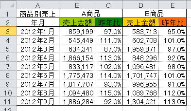

棒グラフ・折れ線グラフのサンプルマクロ
グラフはプロパティ・メソッドも多いので、自分の覚書もかねて掲載しました。

この元データから、以下のグラフが作成されます。
解説は、プログラム内のコメントを参考にして下さい。
Sub sample1()
Dim i As Integer '系列のFor～Nextで使用
Dim rowMax As Long 'グラフ範囲の最終行
Dim colMax As Long 'グラフ範囲の最終列
Dim MyRange As Range 'グラフ範囲
Dim chartObj As ChartObject 'Chartオブジェクトのコンテナ
rowMax = Cells(Rows.Count, 1).End(xlUp).Row 'グラフ範囲の最終行
colMax = Cells(2, Columns.Count).End(xlToLeft).Column 'グラフ範囲の最終列
Set MyRange = Range(Cells(1, 1), Cells(rowMax, colMax)) 'グラフ範囲
'Chartを追加、グラフ範囲の右隣に、グラフ範囲の倍の大きさで作成
Set chartObj = ActiveSheet.ChartObjects.Add(MyRange.Width, MyRange.Top, MyRange.Width * 2, MyRange.Height * 2)
'追加されたChartオブジェクトに対する処理
With chartObj.Chart
'元データ範囲の設定
.SetSourceData MyRange
'タイトル表示
.HasTitle = True
.ChartTitle.Text = "=" & MyRange.Cells(1, 1).Address(ReferenceStyle:=xlR1C1, External:=True)
'全系列に対する処理
For i = 1 To .SeriesCollection.Count
With .SeriesCollection(i)
Select Case i
Case 1, 3 '売上金額
.ChartType = xlColumnClustered '縦棒グラフ
.AxisGroup = 1 '主軸
.ApplyDataLabels 'データラベル表示
.DataLabels.NumberFormatLocal = "#,##," 'データラベルの表示形式
.Interior.Color = Cells(2, i + 1).Interior.Color '棒グラフの色
Case 2, 4 '昨年比
.ChartType = xlLine '折れ線グラフ
.AxisGroup = 2 '第2軸
.Border.Color = Cells(2, i + 1).Interior.Color '折れ線グラフの色
End Select
End With
Next
'主軸の書式設定
.Axes(xlValue).TickLabels.NumberFormatLocal = "#,###," '表示形式
'第2軸の書式設定
.Axes(xlValue, xlSecondary).MinimumScale = 0.8 '最小値
.Axes(xlValue, xlSecondary).MaximumScale = 1.2 '最大値
.Axes(xlValue, xlSecondary).MajorUnit = 0.05 '目盛間隔
.Axes(xlValue, xlSecondary).TickLabels.NumberFormatLocal = "0%" '表示形式
End With
End Sub
系列データのデータ数が増えた時に、データ範囲を変更するマクロも掲載しておきます。
グラフに設定済の範囲を自動拡張するように書いています。
Sub sample2()
Dim i As Long '系列のFor～Nextで使用
Dim rowMin As Long 'グラフデータ範囲の開始行
Dim rowMax As Long 'グラフデータ範囲の最終行
Dim strFormula As String 'グラフデータ範囲の設定文字列
Dim strExternal() As String 'グラフのSERIES関数の引数毎に分割した文字列
Dim strAddress() As String 'ADDRESS文字列をシートとRANGE指定に分割した文字列
Dim newAddress1 As String 'SERIES関数の新しい系列名のADDRESS
Dim newAddress2 As String 'SERIES関数の新しい系列値のADDRESS
'Chartオブジェクトに対する処理
With ActiveSheet.ChartObjects(1).Chart
'全系列に対する処理
For i = 1 To .SeriesCollection.Count
'グラフデータ範囲の設定文字列
strFormula = .SeriesCollection(i).Formula
'=SERIES(引数・・・)を引数だけにする
strFormula = Replace(Replace(strFormula, "=SERIES(", ""), ")", "")
'SERIES関数の引数毎に分割
strExternal = Split(strFormula, ",")
'系列名（SERIES関数の第2引数）の処理
'ADDRESS文字列をシートとRANGE指定に分割、ADDRESSにブック名が入っている場合は消去
strAddress = Split(Replace(strExternal(1), "[" & ThisWorkbook.Name & "]", ""), "!")
'系列名の開始行
rowMin = Worksheets(strAddress(0)).Range(strAddress(1)).Item(1).Row
'系列名の最終行
rowMax = Worksheets(strAddress(0).Cells(Rows.Count, Worksheets(strAddress(0)).Range(strAddress(1)).Item(1).Column).End(xlUp).Row
'SERIES関数の新しい系列名のADDRESS
newAddress1 = Worksheets(strAddress(0)).Range(strAddress(1)).Resize(rowMax - rowMin + 1, 1).Address(External:=True)
'系列値（SERIES関数の第3引数）の処理
'ADDRESS文字列をシートとRANGE指定に分割、ADDRESSにブック名が入っている場合は消去
strAddress = Split(Replace(strExternal(2), "[" & ThisWorkbook.Name & "]", ""), "!")
'SERIES関数の新しい系列値のADDRESS
newAddress2 = Worksheets(strAddress(0)).Range(strAddress(1)).Resize(rowMax - rowMin + 1, 1).Address(External:=True)
'グラフデータ範囲の再設定
.SeriesCollection(i).Formula = "=SERIES(" & _
strExternal(0) & "," & _
newAddress1 & "," & _
newAddress2 & "," & _
i & ")"
Next i
End With
End Sub
以上２つのマクロを応用すれば、
棒グラフ・折れ線グラフなら、大抵は何とかなるでしょう。
同じテーマ「マクロVBAサンプル集」の記事
図を確認しながら消していく（Shape）
オートシェイプを他ブックの同じ位置に貼り付ける（Shapes,DrawingObjects）
全シートの画面キャプチャを取得する（keybd_event）
写真の取込方法について（Pictures.Insert,Shapes.AddPicture）
写真をサムネイルに変換して取り込む（Shapes.AddPicture）
円グラフの色設定（Chart,SeriesCollection）
棒グラフ・折れ線グラフのサンプルマクロ
人口ピラミッドのグラフをマクロで作成
グラフで特定の横軸の色を変更し基準線を引くマクロ
グラフのデータ範囲を自動拡張するマクロ
画像のトリミング（PictureFormat,Crop）
新着記事NEW ・・・新着記事一覧を見る
VBA100本ノック 100本目：WEBから100本ノックのリストを取得｜VBA練習問題（3月3日）
VBA100本ノック 99本目：自動席替え（行列と前後左右が全て違うように）｜VBA練習問題（3月2日）
VBA100本ノック 98本目：席替えルールが守られているか確認｜VBA練習問題（3月1日）
VBA100本ノック 97本目：Accessデータを取得（グループ集計）｜VBA練習問題（2月27日）
VBA100本ノック 96本目：Accessデータを取得（マスタ結合&抽出）｜VBA練習問題（2月26日）
VBA100本ノック 95本目：図形のテキストを検索するフォーム作成｜VBA練習問題（2月24日）
VBA100本ノック 94本目：表範囲からHTMLのtableタグを作成｜VBA練習問題（2月23日）
VBA100本ノック 93本目：複数ブックを連結して再分割｜VBA練習問題（2月22日）
VBA100本ノック 92本目：セルの色を16進で返す関数｜VBA練習問題（2月20日）
VBA100本ノック 91本目：時間計算（残業時間の月間合計）｜VBA練習問題（2月19日）
アクセスランキング ・・・ ランキング一覧を見る
1.最終行の取得（End,Rows.Count）｜VBA入門
2.RangeとCellsの使い方｜VBA入門
3.変数宣言のDimとデータ型｜VBA入門
4.マクロって何？VBAって何？｜VBA入門
5.Range以外の指定方法（Cells,Rows,Columns）｜VBA入門
6.セルのコピー&値の貼り付け（PasteSpecial）｜VBA入門
7.繰り返し処理（For Next)｜VBA入門
8.セルに文字を入れるとは（Range,Value）｜VBA入門
9.マクロはどこに書くの（VBEの起動）｜VBA入門
10.とにかく書いてみよう（Sub,End Sub）｜VBA入門
- ホーム
- マクロVBA応用編
- マクロVBAサンプル集
- 棒グラフ・折れ線グラフのサンプルマクロ
このサイトがお役に立ちましたら「シェア」「Bookmark」をお願いいたします。
記述には細心の注意をしたつもりですが、
間違いやご指摘がありましたら、「お問い合わせ」からお知らせいただけると幸いです。
掲載のVBAコードは動作を保証するものではなく、あくまでVBA学習のサンプルとして掲載しています。
掲載のVBAコードは自己責任でご使用ください。万一データ破損等の損害が発生しても責任は負いません。